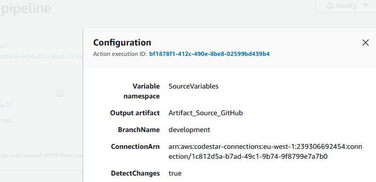
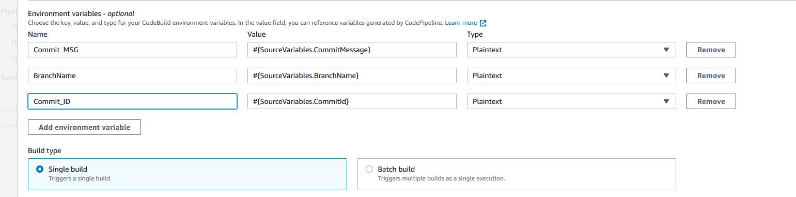

SCC
Brasil
os cloud gurus
Software Cloud Consulting
Your software development, cloud, consulting & shoring company
How to pass Variables from Stage to Stage in CodePipeline

By Wolfgang Unger
If you worked with CodePipeline, you might know you have normally various stages, like Source,
Build, Test etc
The Source Stage will checkout the Source Code needed for the other stages from Github or
CodeCommmit
The following stages could be a CodeBuild Project, could include Actions like ShellScripAction
or other Actions
Sometimes you might need some Git Infos in one of these actions or stages
To be able to read these informations, you must do some changes in you pipeline, described next
lease also have a look in this AWS documention, where you can find useful informations and also
a list of the available variables of each stage
First you must set a Variable Namespace from the stage where you want to pass variables to other stages
In your pipeline stage you can find informations on this if you click the I(nfo) logo on the right side of the stage box
You can see in this picture if have already set the Namespace in this example stage

You can add the namespace by editing the pipeline and stage by Editing it or of course the better way to adapt your IaC definition of the pipeline
For a Python CDK Pipeline this would be for example to add a parameter to the Action
source_action=cpactions.CodeStarConnectionsSourceAction(
action_name="GitHub",
connection_arn=codestar_connection_arn,
owner=repo_owner,
repo=repo,
branch=config["main"]
trigger_on_push=True,
output=source_artifact,
variables_namespace="SourceVariables"
)
Once you have added this namespace you can by now read these SourceVariables in follow up stages. As listed up in the AWS documentations these are:
#{SourceVariables.AuthorDate}
#{SourceVariables.BranchName}
#{SourceVariables.CommitId}
#{SourceVariables.CommitMessage}
#{SourceVariables.CommitterDate}
#{SourceVariables.CommitUrl}
#{SourceVariables.RepositoryName}
Unfortunatelly you cannot read them straight ahead as they are in a ShellScripAction or other Action.
You must define a environment variable for this Action and this will allow you to read this variable in you bash script.
Therefor you have to add environment variable to the action where you need to evaluate the SourceVariables
In this example action, there are already 3 variables defined .

action = pipelines.ShellScriptAction(
action_name="AcceptanceTests",
run_order=stage.next_sequential_run_order(),
additional_artifacts=[source_artifact],
environment_variables={
"Commit_MSG": aws_codebuild.BuildEnvironmentVariable(
value="#{SourceVariables.CommitMessage}",
type=aws_codebuild.BuildEnvironmentVariableType.PLAINTEXT
),
"BranchName": aws_codebuild.BuildEnvironmentVariable(
value="#{SourceVariables.BranchName}",
type=aws_codebuild.BuildEnvironmentVariableType.PLAINTEXT
)
},
..
By now your are able the read the mapped variable Commit_MSG in your Shell scripts or other Actions
You can simple read theme with:
BRANCH_NAME=${BranchName}
Don't forget, you cannot read the Variables from Source Stage directly.
This won't work:
BRANCH_NAME=${SourceVariables.BranchName}
This is just one example how to pass variables from the source stage to a following Stage and ShellScripAction.
But you can pass any of the listed variables in the AWS documentation to stages and actions AFTER the stage, where you defined your namespace.
Now have fun with your CodePipeline
Autor

Wolfgang Unger
AWS Architect & Developer
6 x AWS Certified
1 x Azure Certified
A Cloud Guru Instructor
Certified Oracle JEE Architect
Certified Scrum Master
Certified Java Programmer
Passionate surfer & guitar player